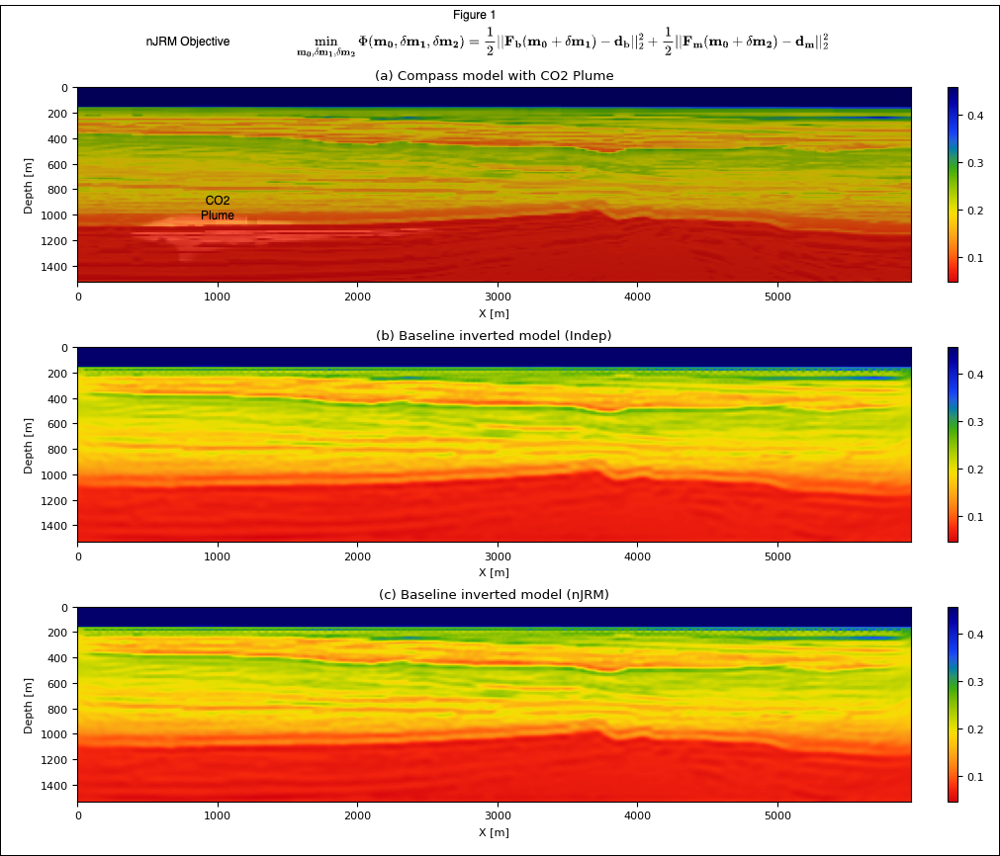
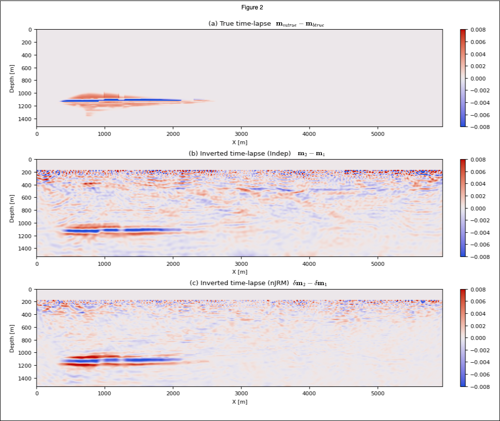

Time-lapse seismic monitoring of geological carbon storage with the nonlinear joint recovery model
![]()
Objectives/Scope
During time-lapse seismic monitoring, weak 4D signal below the level of inversion or migration artifacts poses challenges. To address these, low-cost randomized non-replicated acquisitions and linear joint recovery model (JRM) have been introduced to take advantage of the shared information between different vintages in the time-lapse seismic data and subsurface structure undergoing localized changes. Since the relationship between seismic data and subsurface properties is seldomly linear, we propose a more versatile nonlinear JRM to invert for the squared slowness of the vintages.
Methods, Procedures, Process
During linear JRM, for two seismic vintages, three unknown parameters are inverted, namely the common component, \(m_0\), and innovation components, \(\delta m_1\) and \(\delta m_2\), with respect to this common component and there is a linear relationship between these components and seismic data. We proposed here an alternative nonlinear JRM (nJRM) that take advantage of the full nonlinear relation between these components and time-lapse data through the wave equation. We then minimize a joint misfit that takes full advantage of the shared information in the background model as shown in Figure 1. Additionally, careful derivation of the gradient shows that only one gradient computation per vintage is necessary making the computational cost equivalent to independent recovery. To demonstrate the advantage of the proposed nonlinear joint inversion, we consider an experimental setup involving CO2 monitoring and consider the seismic time-lapse in the subsurface incurred by a CO2 reservoir and use a realistic synthetic model representing North Sea (Figure 1(a)). We invert two vintages with the proposed nJRM to obtain baseline and monitor images and their difference gives the time-lapse change due to CO2 plume. Similar to the conventional linear method, nJRM should trivially extend to more than two vintages as well. Finally, we show the robustness of our method against non replicated acquisition compared to traditional independent recovery known to rely heavily on replication.
Results, Observations, Conclusions
We show in Figures 1 (b) and (e), the independent and in Figures 1 (c) and (f), the nJRM recovery obtained with the proposed method. We observe that both the baseline and monitor are well recovered individually. In Figures 2 (a), (b) and (c) we show the ground truth time-lapse, independent recovery time-lapse and nJRM time-lapse difference respectively for a non-replicated acquisition, mimicking sparse OBNs, highlighted with red/green dots on the model. In these figures, time-lapse differences inverted with nonlinear JRM are more accurate and contain less artifacts and noise thanks to exploiting common information between surveys (the background model) and small localized time-lapse differences. Moreover, independent recovery suffers consequently from non-replication with clear artifacts in the shallow area (Figure 2(b)) while nonlinear JRM stays relatively focused on the time-lapse difference with dimmer and less structured artifacts. These results are consistent with the linear JRM literature, strengthens the argument for a low-cost randomized non-replicated acquisition in the time-lapse seismic survey for GCS rather than expensive replicated surveys. Finally, we measure the degree of repeatability of the recovery of the vintages and their time-lapse difference with the traditional normalized root mean square (NRMS). In this study, the NRMS value for the independent and nJRM recoveries are 1.05% and 0.46%, respectively showing a clear advantage for joint recovery.
Significance/Novelty
To our knowledge, this is the first introduction of a non-linear extension to the traditionally linear JRM applied to time-lapse inversion. Through a realistic 2D synthetic study of GCS, we showed that the proposed new technique, which is trivially extendible to more than two vintages, confirms that non-replication can be beneficial to time-lapse imaging of the subsurface making seismic monitoring of GCS less costly for long term sustainability of the technology. Additional material is available at https://slimgroup.github.io/IMAGE2023/.


Supplmentary material
In this work, we used Compass model (E. Jones et al. 2012) which is a representative model of the geology of North sea. The reason for choosing this model is that it has all the essential components of a geological carbon storage site such as a high permeable reservoir, a very low permeable seal and a low permeable overburden. We injected CO2 at the rate of 7 Mt/yr for 30 years in the reservoir which creates CO2 plume as it is visible in Figure 1(d). We conducted non-replicated time-lapse seismic surveys with 180 sources and 100 receivers with source spacing of 35m and receiver spacing of 60m using JUDI.jl. The time-lapse data is inverted for the squared slowness ([s/km]^2) of baseline and monitor survey using non-linear JRM.
Our goal is to find the time-lapse change \(\delta m\) that explains the time-lapse change in the seismic data. Mathematically, we want to find \(m_1\) and \(m_2\) such that \[ \displaylines{F(m_1) = d_b \\ F(m_2) = d_m } \]
where \(m_1, m_2\) are the unknown velocity models, \(F\) is the forward modeling operator used to generate synthetic data and \(d_b\) and \(d_m\) are the baseline and monitor survey data. In non-linear JRM setting, we leverage the commonalities between the repeat surveys and, therefore, we re-write the above formulation in terms of common component \(m_0\) and innovations, \(\delta m_1, \delta m_2\), with respect to this common component: \[ \displaylines{F(m_0+\delta m_1) = d_b \\ F(m_0+\delta m_1) = d_m} \]
Due to the non-linearity and limited frequency band of the sources and limited aperture, problems like these are very difficult to solve in the absence of good initial model. Fortunately, in GCS, we assume that the area is surveyed apriori and we have a good initial estimate of the squared slowness, \(m_0\) which acts as a starting point of our parameter estimation. To estimate the parameters, \(m_0, \delta m_1, \delta m_2\), we minimize the following objective, \[ \min_{m_0, \delta m_1, \delta m_2} \Phi(m_0, \delta m_1, \delta m_2) = \frac{1}{2} || F(m_0 + \delta m_1) - d_b ||_2^2 + \frac{1}{2} || F(m_0 + \delta m_2) - d_m ||_2^2 \]
where \(||\) is the \(\ell_2\) norm operator. This standard non-linear least-square problem can be solved via gradient-based optimization following FWI literatures. From standard linear algebra, we can write the gradients, \[ \begin{align} \displaylines{ \nabla_{m_0} \phi = \nabla_{m_0} F(m_0 + \delta m_1)^T(F(m_0 + \delta m_1)-d_b) + \nabla_{m_0} F(m_0 + \delta m_1)^T(F(m_0 + \delta m_1)-d_m) \\ \nabla_{\delta m_1} \phi = \nabla_{\delta m_1}^T(F(m_0 + \delta m_1)-d_b) \\ \nabla_{\delta m_2} \phi = \nabla_{\delta m_2}^T(F(m_0 + \delta m_2)-d_m) \\ } \end{align} \]
where \(\nabla_{x}F(y)\) is called the Jacobian of F at x. In the following paragraph, we denote these by \(J_{x}(y)\).
In theory, calculating these Jacobians is quite expensive as each application of the Jacobian \(J_{x}(y)\) require two PDE solves (one each for forward and adjoint waves). This would lead to a total of eight PDE solves while the original problem of independent recovery of \(m1\) and \(m2\) requires only two PDEs. However, looking at the structure of the operator F and the expression of its Jacobian using the math from adjoint state gradient, we find that \[ \begin{equation} \begin{aligned} J_{\delta m_1}(m_0 + \delta m_1)^T \delta d = \sum_t \ddot{u}(m_0 + \delta m_1) v(m_0 + \delta m_1; \delta d) \\ J_{m_0}(m_0 + \delta m_1)^T \delta d = \sum_t \ddot{u}(m_0 + \delta m_1) v(m_0 + \delta m_1; \delta d) \end{aligned} \Bigg\} \implies J_{\delta m1}(m_0 + \delta m_1) = J_{m_0}(m_0 + \delta m_1) \end{equation} \]
where \(v\) correponds to the forward wavefields and corresponds to the second temporal derivative of the adjoint wavefields. Similarly, we perform this for the second vintage. Thus, we see that we need to consider only two Jacobians \(J_{1}\) and \(J_{2}\), one for each velocity \((m_0 + \delta m_1\) and \((m_0 + \delta m_2\). These mathematical simplifications drastically reduces the computation of the gradient updates as we now need only two gradients which is similar to the number of gradient required for the original inpdependent recovery problem. However, compared to the independent recovery problem, the nJRM formulation is much more stringent as it relies on the large common component as the main contributer to the inverse problem since the time-lapse changes are relatively samll. Putting these equation in the matrix form, we see that the gradient looks very similar to the linear JRM problem (Yin, Louboutin, and Herrmann (2021)) \[ \begin{equation} \begin{aligned} \nabla \Phi = \begin{bmatrix} J_1^T \ \ \ J_2^T \\ J_1^T \ \ \ 0 \\ 0 \ \ \ J_2^T \end{bmatrix} \begin{bmatrix} F(m_0 + \delta m_1) - d_b \\ F(m_0 + \delta m_2) - d_m \end{bmatrix} \end{aligned} \end{equation} \]